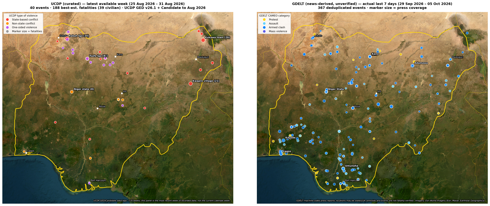

RBM GLOBAL · OPEN-SOURCE SECURITY AND HUMANITARIAN OVERVIEW
Nigeria — Weekly Threat Brief
Reporting window: 28 September - 4 October 2026. Issue date: 5 October 2026. Catch-up edition published 6 October 2026. Selected sourced security and humanitarian reporting; not an exhaustive national incident register.
Overview
Civilian harm and disruption were reported in Plateau, Niger and Anambra, while an abduction report in Imo contained unresolved passenger and rescue counts. A separate military statement described fighting and deaths in Adamawa. These reports establish local concerns, but cannot support a national weekly casualty total or a like-for-like trend estimate.
Reviewed developments
Plateau: traders injured on 4 October
Channels reported on 5 October that police were investigating a shooting in Jos South on 4 October. The police statement said seven injured traders had been traced to a clinic. This is preliminary, attributed reporting published after the reporting window; it is not a final statewide incident count. [1]
Niger: violence in Minna on 3-4 October
A Channels report dated 4 October described three deaths following an alleged shooting by a vigilante and subsequent unrest in Minna. It attributes the initial account to police and subsequent deaths to local reporting. Responsibility and the full sequence remain subject to investigation. [2]
Anambra: communal clash and market disruption
The Guardian reported on 5 October that violence beginning on 1 October between Aguleri and Umuoba-Anam left five people dead and damaged homes and businesses. It described a market closure and an official ceasefire direction issued on 4 October. A meeting scheduled for 7 October is prospective, not an achieved settlement. The death toll is a reported figure, not independently verified here. [3]
Imo: abduction counts remain unresolved
Channels reported on 3 October on the abduction of passengers travelling from Oyo to service camps. The incident was reported as occurring on Thursday, 1 October. The transport operator described 19 abducted passengers; a manifest reportedly listed 30 passengers, while police reported 10 rescues. The article explicitly says the identity and overlap of those rescued were unclear. These figures cannot be subtracted to calculate how many remain missing. [4]
Adamawa: attributed military casualty claims
An Operation Hadin Kai statement carried by Channels on 1 October described fighting on 30 September - 1 October. The military reported 16 alleged insurgents and three soldiers killed. These are official claims without independent outcome verification in this review; they do not demonstrate a wider improvement in civilian safety. [5]
Coverage and confidence
| Zone | Coverage in this edition |
|---|---|
| North Central | Plateau and Niger: selected attributed reporting |
| North East | Adamawa military statement; UNFPA background |
| South East | Anambra communal violence; Imo abduction report |
| South West | Oyo travellers affected; incident reported in Imo |
| North West / South South | No comprehensive event review; no inference of quiet |
Map and data status

Data checked for this publication
The interactive map contains 2,144 UCDP events dated 1 October 2024 - 31 August 2026 and 2,281 collapsed GDELT records dated 24 August - 5 October 2026. Every GDELT daily input through 5 October (yesterday in Europe/London) was ingested, with no missing input days. Its maximum event date is also 5 October. UCDP GED 26.1 plus Candidate through August is the latest source combination returned by the updater.
The figure has two different windows
This publication-date image, rendered 6 October, shows UCDP 25-31 August: 40 events and 188 best-estimate fatalities, including 39 civilian fatalities. Its GDELT panel covers 29 September - 5 October: 367 machine-coded records and 3,222 articles. That news window extends one day beyond the brief reporting period and excludes 28 September. Neither panel is a complete map of this brief week.
Interpretation
GDELT measures machine-coded news reporting and can repeat or misclassify incidents and locations. Article weights are not casualty figures or measured opinion. UCDP is curated, delayed and revisable. Do not add the panels or compare their counts as a trend.
Humanitarian context
UNFPA describes persistent protection risks, disrupted health services and food insecurity associated with conflict in the northeast. This is background, not a count for this reporting week. Retrieved versions of its emergency dashboard differed on the update date and people-in-need figure; no numerical needs estimate is adopted here. [6]
Limitations
This is a selective open-source review, not field verification or complete coverage of all 36 states and FCT. Multiple articles repeating one official statement are not independent corroboration. Reported deaths from different categories are not combined. No report for an area is not evidence of no incidents. No new representative poll or verified X sample is introduced; the sentiment assessment remains dated 27 September with its original source windows.
Sources
- Channels Television; published 5 October; event 4 October: Police investigation into Plateau shooting
- Channels Television; published 4 October; events 3-4 October: Three killed in Minna clash
- The Guardian; published 5 October; events from 1 October: Aguleri-Umuoba-Anam clash and official response
- Channels Television; published 3 October; reported incident 1 October: Oyo travellers abducted in Imo: conflicting counts
- Channels Television; published 1 October; events 30 September - 1 October: Operation Hadin Kai statement on Adamawa fighting
- UNFPA; background page checked 6 October; update date inconsistent across retrieved versions: Nigeria Humanitarian Emergency